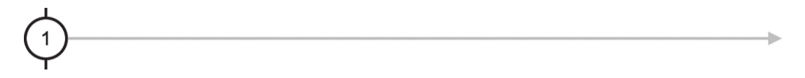
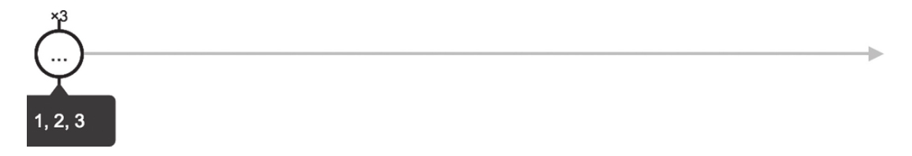

利用of这个操作符可以轻松创建指定数据集合的Observable对象，比如，为了产生包含三个正整数的Observable对象，如果利用Observable的构造函数，需要写一大堆的代码，但是如果使用of，产生数据流的代码可以简化为一行，代码如下：
import {Observable} from 'rxjs/Observable';
import 'rxjs/add/observable/of';
const source$ = Observable.of(1, 2, 3);
source$.subscribe(
console.log,
null,
() => console.log('complete')
);
代码4-1 of使用示例
或者不使用打补丁方式，从rxjs/observable目录下导入，如下所示：
import {of} from 'rxjs/observable/of';
const source$ = of(1, 2, 3);
产生的Observable对象source$，在被subscribe之后，就会把参数依次吐出来，在代码4-1中，of有三个参数1、2、3，于是source$被订阅时就会吐出三个数据，然后调用Observer的complete函数。
需要注意的是，source$被订阅时，吐出数据的过程是同步的，也就是没有任何时间上的间隔，比如，假如有下面这样创建的数据源：
const source$ = Observable.of(1);
对应的弹珠图如图4-1所示，数据1出现在数据流最开始的位置，有一个竖杠和唯一的数据重合，也就是说吐出唯一的数据之后，这个数据流立刻终结了。

图4-1 一个参数的of弹珠图
在代码4-1中，传递给of三个数据1、2、3，那么对应的弹珠图如图4-2所示，可以看到，1、2、3按照在参数列表中出现的顺序吐出，但是它们之间没有时间间隔，挤在一起，数据产生完毕之后，对应的Observable对象也就完结了。

图4-2 多个参数的of弹珠图
of产生的是Cold Observable，对于每一个Observer都会重复吐出同样的一组数据，所以可以反复使用。
提示
在RxJS v4中，实现of功能的操作符叫做just，如果要把基于v4的代码迁移到v5，就需要替换所有的just函数调用为of。
适合使用of的场合是已知不多的几个数据，想要把这些数据用Observable对象来封装，然后就可以利用RxJS强大的数据管道功能来处理，而且，也不需要这些数据的处理要有时间间隔，这就用得上of了。
在现实项目中使用这种操作符的机会并不多，但是，在示例代码中使用of来创造数据源倒是挺方便，本书的示例代码中大量使用了of。